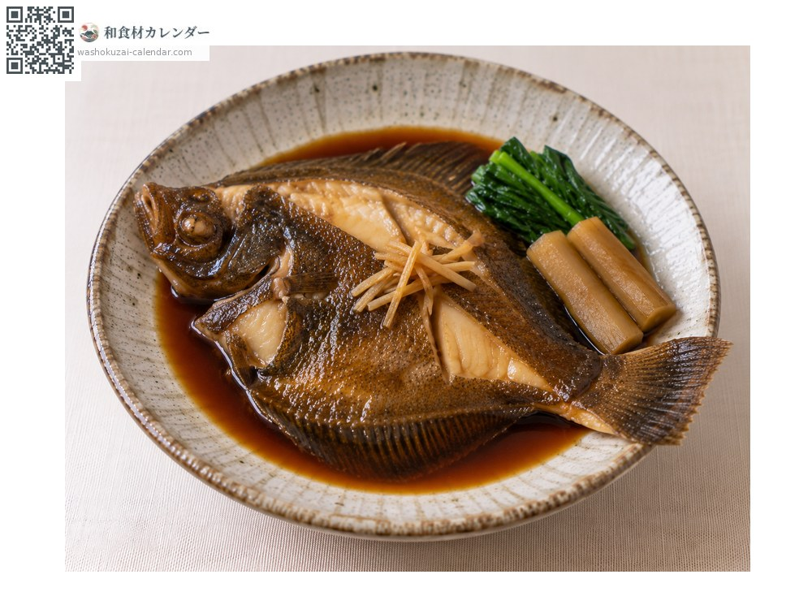
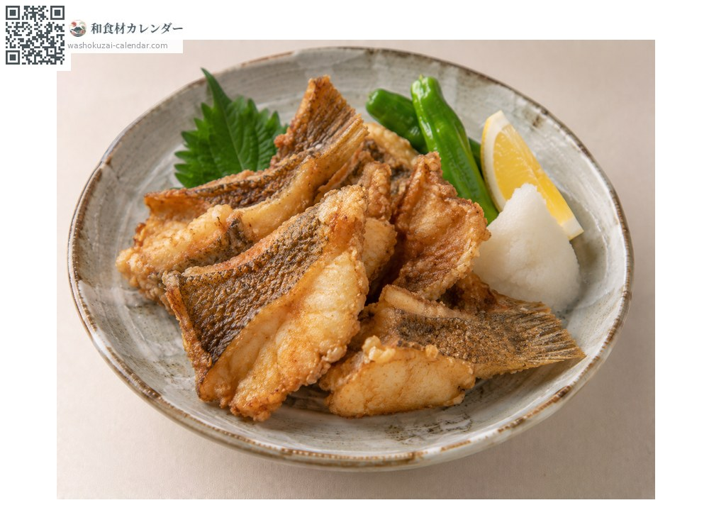
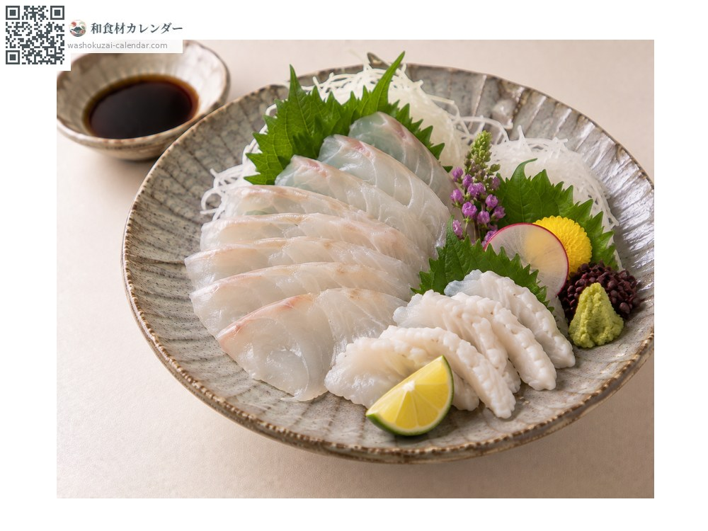
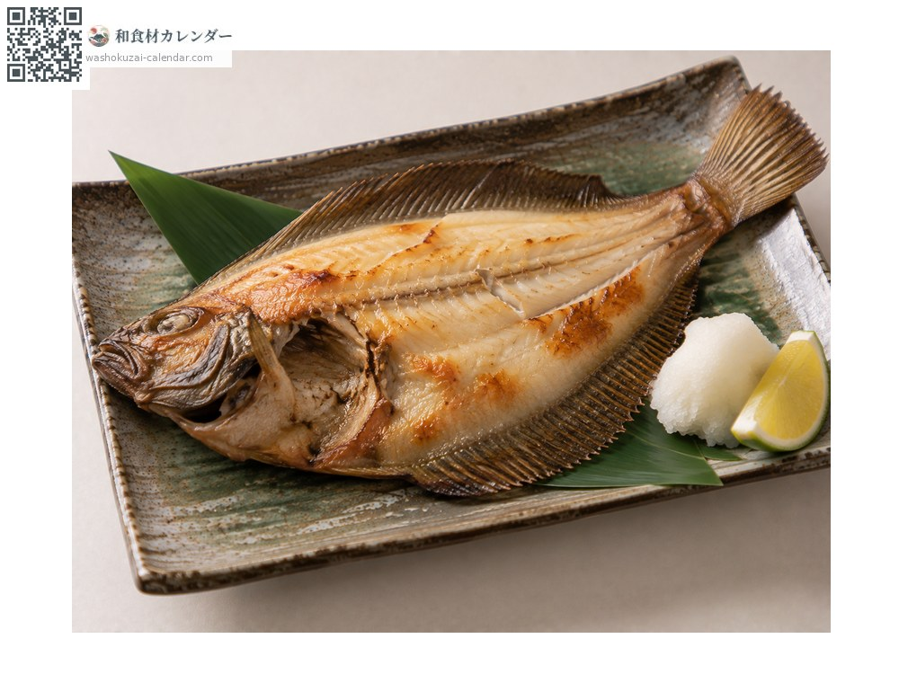

海鲜
真子鲽
マコガレイ まこがれい
应季时期为6月、7月、8月

应季时期
1月
2月
3月
4月
5月
6月
7月
8月
9月
10月
11月
12月
应季有供应
烹饪方法

甜酱油炖煮
最经典的做法。加姜甜咸炖煮。

日式炸物（唐扬）
小尾的连骨一起炸。

生鱼片
够新鲜可生食，鳍边肉最美味。

一夜干
风干一夜后烧烤。
挑选方法
鱼肉厚实、腹面洁白。有黏液且眼睛清澈。
保存方法
取出内脏后冷藏。1至2天内用完。
主要产地
小知识
大分县日出町的「城下鲽」生长在有淡水涌出的海域，以没有土腥味闻名。